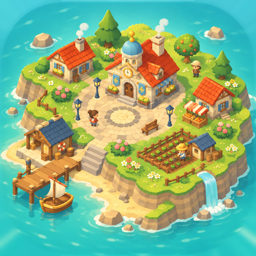

Little Haven
Dorf bauen auf deiner Insel
Ein gemütliches Aufbauspiel für iPhone und iPhone Duo: Du bist Bürgermeister eines kleinen Inseldorfs. Ein Dorftag ist ein echter Tag, deine Bewohner haben Wünsche und Geschichten.
Support
Ganzes Spiel freischalten
Kapitel 1 ist kostenlos. Danach schaltet ein einmaliger Kauf alle sieben Kapitel frei – kein Abo, keine Werbung. Du findest ihn im Bürgermeisterbuch auf der Kapitelkarte und unter Buch → Dorf → Einstellungen.
Kauf wiederherstellen
Buch → Dorf → Einstellungen → „Wiederherstellen“. Der Kauf ist an deine Apple-ID gebunden und gilt auf allen deinen Geräten.
Warum dauert Bauen so lange?
Little Haven läuft in Echtzeit: Ein Dorftag ist ein echter Tag, Bauen braucht echte Stunden. Wartezeiten lassen sich nie gegen Geld abkürzen. Wenn du wiederkommst, erzählt dir die Schreiberin, was inzwischen geschehen ist.
Sprache und Mitteilungen
Deutsch oder Englisch stellst du unter Buch → Dorf → Einstellungen um. Dort schaltest du auch Mitteilungen, Ton, Musik und Haptik ein oder aus.
Kontakt
Fragen, Fehler, Wünsche: nathan.seefelder@gmail.com
Support (English)
Unlock the full game
Chapter 1 is free. After that, a one-time purchase unlocks all seven chapters – no subscription, no ads. You find it on the chapter card in the Mayor’s book and under Book → Village → Settings.
Restore purchase
Book → Village → Settings → “Restore”. The purchase is tied to your Apple ID and works on all your devices.
Why does building take so long?
Little Haven runs in real time: one village day is one real day, and building takes real hours. Waiting times can never be skipped for money. When you come back, the scribe tells you what happened while you were away.
Language and notifications
Switch between English and German under Book → Village → Settings. Notifications, sound, music and haptics are there as well.
Contact
Questions, bugs, ideas: nathan.seefelder@gmail.com